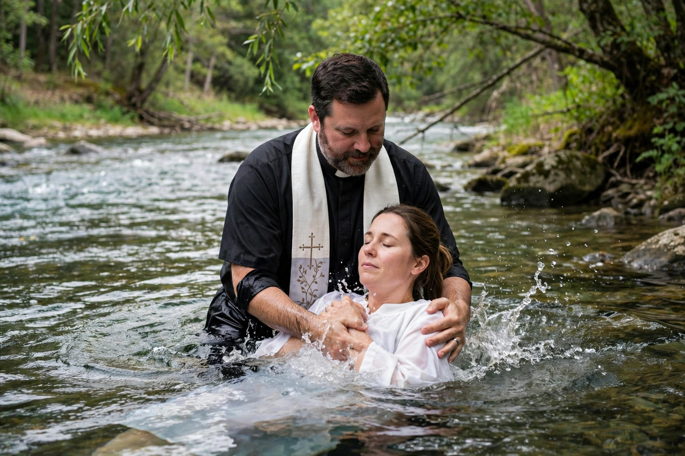

Baptism
From Wikipedia, the free encyclopedia

Baptism is a Christian sacrament and rite of initiation involving the application of water — by immersion, pouring or sprinkling — symbolising purification, rebirth and admission to the Church. Practised since the beginnings of Christianity in obedience to the command in the Great Commission and the example of John the Baptist baptising Jesus, it is regarded by most churches as a Sacrament and by nearly all as essential to Christian identity.
Practice and theology
Churches differ on subjects and mode: Catholics, Orthodox, Lutherans, Anglicans and Methodists baptise infants (paedobaptism) as a means of grace washing away original sin; Baptists, Pentecostals and others practise believer's baptism by full immersion upon a personal profession of faith. The near-universal formula is Trinitarian — 'in the name of the Father, and of the Son, and of the Holy Spirit' (Matthew 28:19) — and most churches recognise one another's baptisms, declining to repeat them.
Origins
Christian baptism adapted Jewish ritual washing and proselyte baptism, and the baptisms of repentance preached by John in the Jordan. The Didache (1st–2nd century) already regulates the rite; by the third century elaborate catechumenate preparation preceded Easter baptism. Total immersion in rivers and baptisteries gave way in the medieval West to affusion (pouring), while the East retained immersion of infants.
Significance
For traditions that see it as sacramental, baptism effects regeneration and incorporation into Christ's body (Romans 6); for memorialist traditions it is an ordinance testifying to faith already present. The question of baptism — its subjects, mode and necessity — has divided churches since the Reformation's Anabaptist controversies, and modern ecumenism (the 1982 Lima text Baptism, Eucharist and Ministry) has moved most historic churches to mutual recognition.